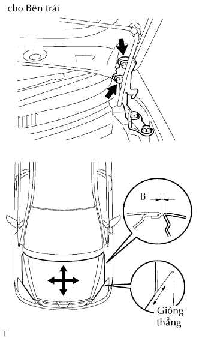
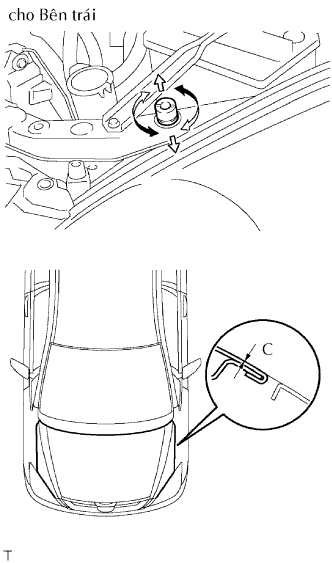
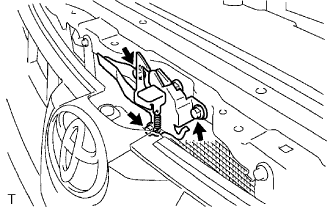
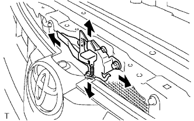

NẮP CAPÔ > ĐIỀU CHỈNH |

| 1. ĐIỀU CHỈNH NẮP CAPÔ |
|  |
Điều chỉnh vị trí của nắp capô.
Nới lỏng các bu lông bản lề của nắp capô.
Dịch chuyển nắp capô và điều chỉnh khe hở giữa nắp capô và tai xe phía trước. Chắc chắn rằng khe hở nằm trong phạm vi tiêu chuẩn.
Hãy xiết chặt các bu lông bản lề nắp capô sau khi điều chỉnh.
|  |
Điều chỉnh đệm cao su sao cho độ cao của nắp capô và tai xe là bằng nhau.
Nâng lên hoặc hạ xuống nép trước của nắp capô bằng cách vặn đệm cao su. Chắc chắn rằng khe hở nàm trong phạm vi tiêu chuẩn.
|  |
Điều chỉnh khoá nắp capô.
Nới lỏng 3 bulông.
|  |
Điều chỉnh vị trí khoá nắp capô sao cho móc khoá có thể khớp vào êm dịu.
Xiết chặt 3 bu lông sau khi điều chỉnh.